Dagvers
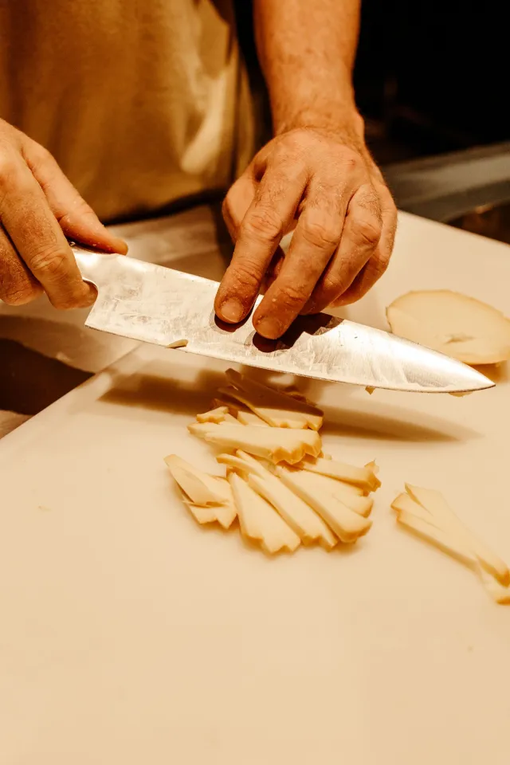
Friet die je proeft
We snijden elke dag verse aardappels en bakken ze goudgeel af. Dat proef je aan de eerste hap.
Onderwijsboulevard · Den Bosch
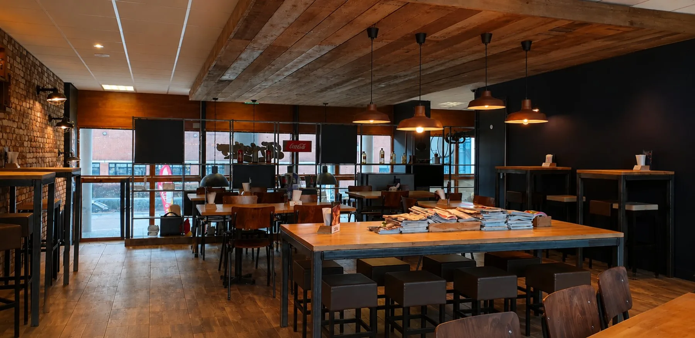
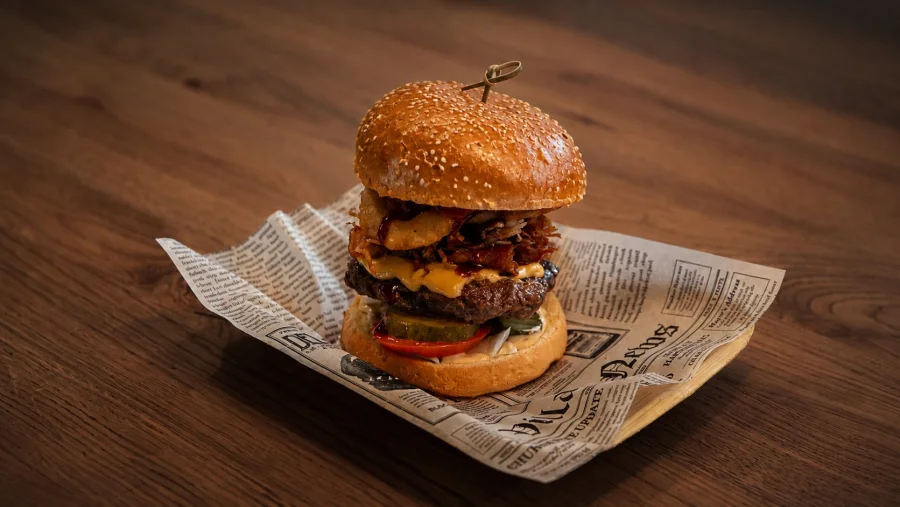
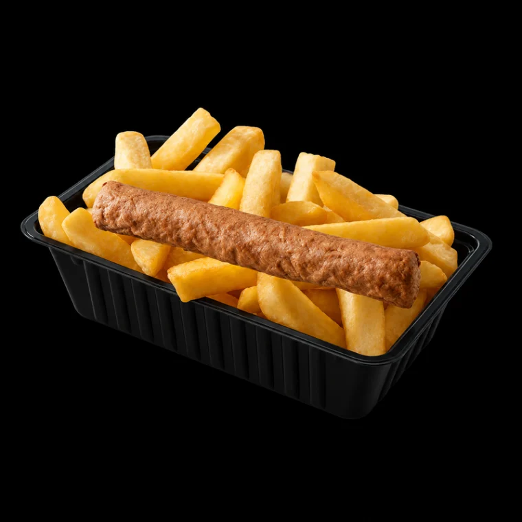
Loop binnen en blijf lekker zitten

We snijden elke dag verse aardappels en bakken ze goudgeel af. Dat proef je aan de eerste hap.
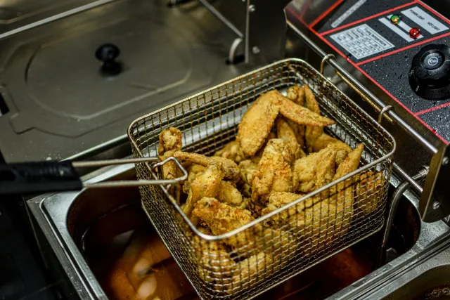
Alle kip is halal, er is een eigen vegetarische kaart en we bakken in plantaardig, glutenvrij vet.
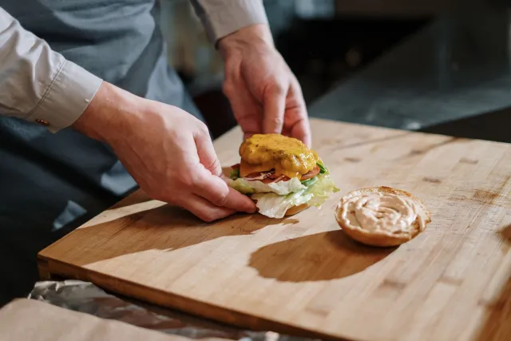
Gezinszakken voor drie tot vijf personen en burgermenu's met friet en drinken vanaf € 11,50.
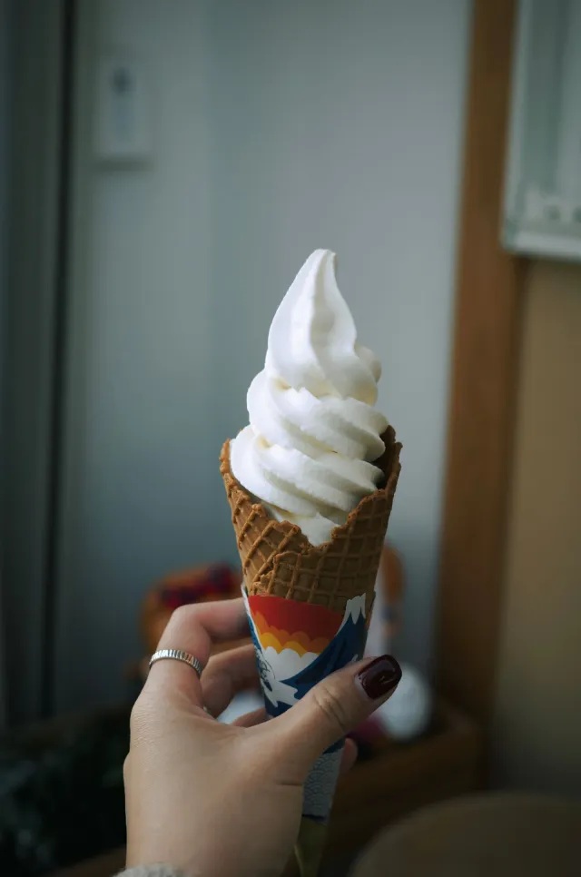
Bestel vooruit en kies zelf het moment. Je loopt binnen, rekent af en neemt het warm mee.
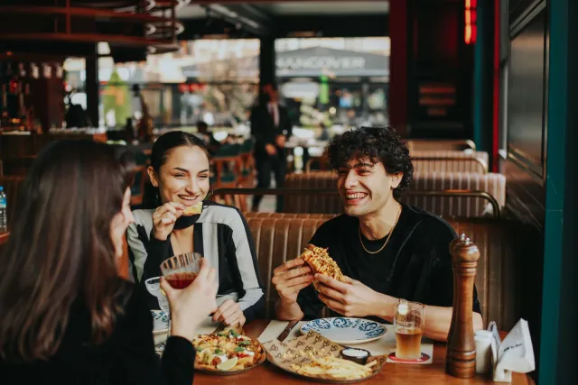
Reserveren hoeft niet. Bestel aan de balie, pak een plek en eet het hier lekker warm op.
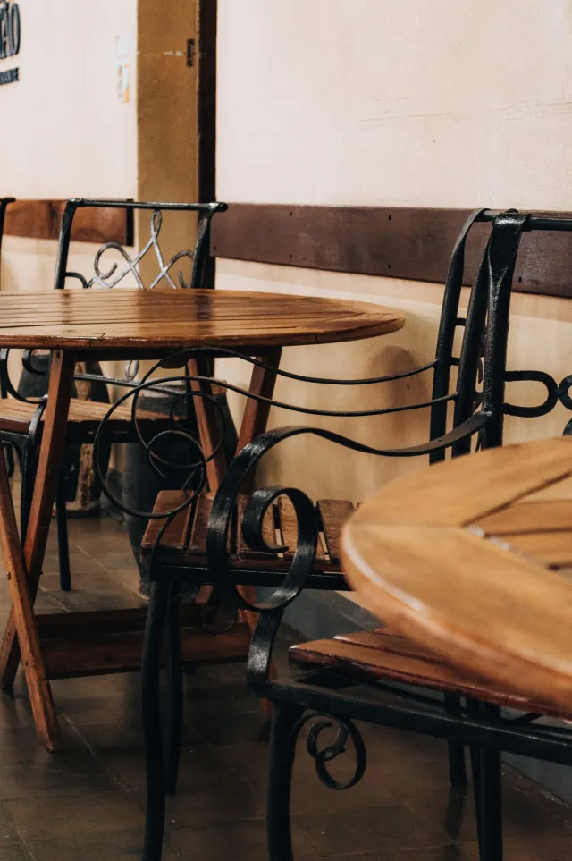
Studeren tussen de colleges door of rustig wachten op je bestelling: er is ruimte en gratis wifi.
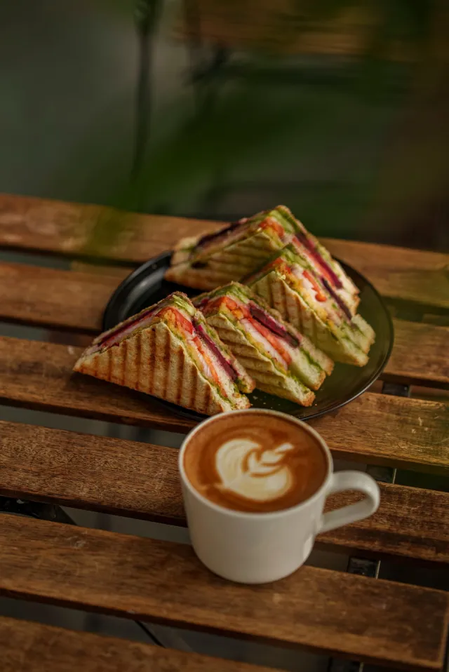
Verse broodjes en koffie vanaf half twaalf. Handig tussen twee lessen of afspraken door.
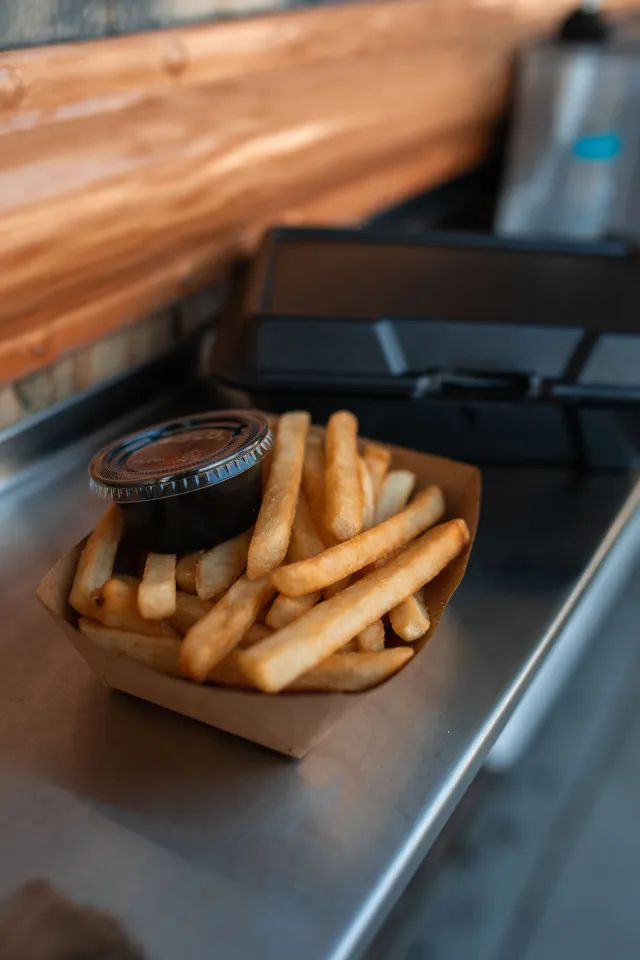
De zaak is rolstoeltoegankelijk en zeven dagen per week open, ook in het weekend.
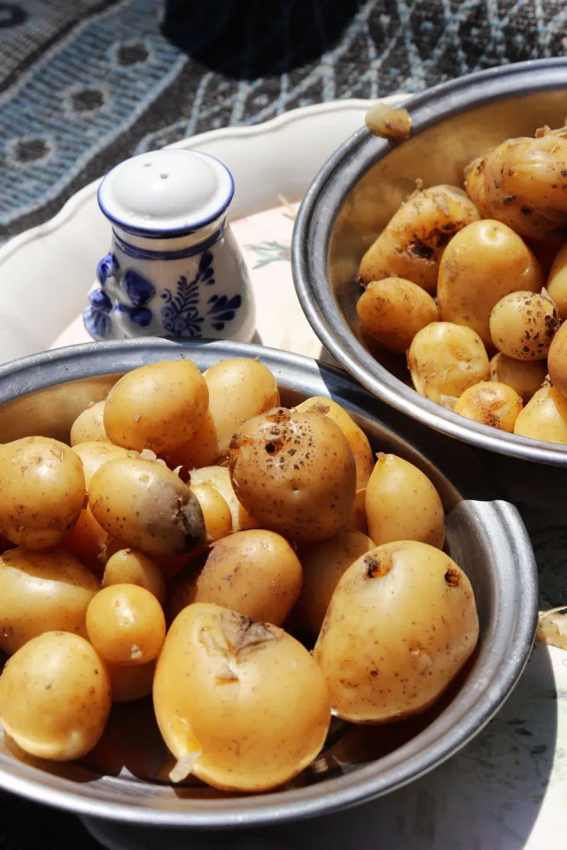
"Kwaliteit en betaalbaarheid zijn de gouden woorden voor ons."De eigenaar van Friethuys Kwibus
"Wij bestellen hier altijd onze friet en gaan niet snel ergens anders heen. De friet die ze hier serveren is een van de beste die ik ooit heb gehad."
Een super schone zaak en het personeel is zeer vriendelijk. Het eten is echt heerlijk en de prijzen liggen lager dan je gewend bent. Echt een aanrader.
De beste friet van Den Bosch. Goudgeel en krokant, precies zoals friet hoort te zijn.
Een echte aanrader. Je wordt snel geholpen en het eten is lekker, ook als het druk is.
Lekker gegeten en prima geholpen. Een fijne zaak om met z'n allen even binnen te zitten.
Het smaakt hier heel lekker, en de milkshake is echt een aanrader. Ook fijn dat je precies weet wanneer het klaarstaat.
Het beste stoofvlees en de lekkerste pikante bamischijf van de buurt. En het staat altijd netjes op tijd klaar.
Alles staat online, met prijzen en foto's: friet, snacks, burgers, kip en softijs.
Zo snel mogelijk of op het kwartier dat jou uitkomt. Meenemen of hier opeten kies je erbij.
Je bestelling staat klaar aan de balie. Je rekent daar af met pin of contant.
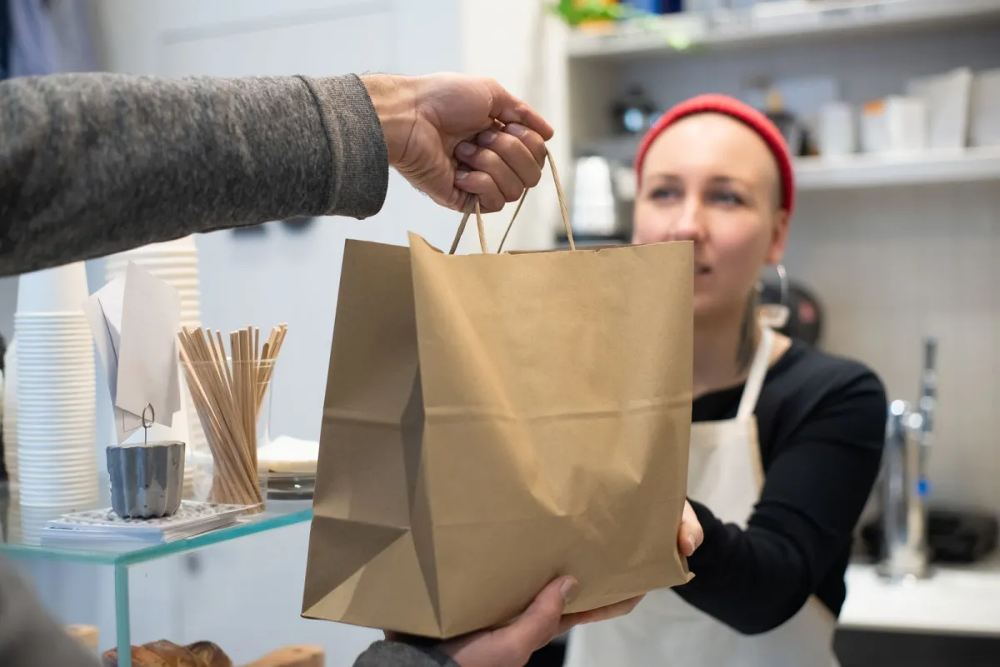
Loop gewoon binnen, reserveren hoeft nooit.
Ma t/m vr vanaf 11.30 uurOnderwijsboulevard 416, 's-Hertogenbosch · loop gerust binnen